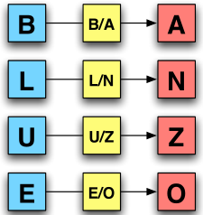
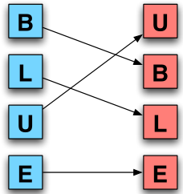
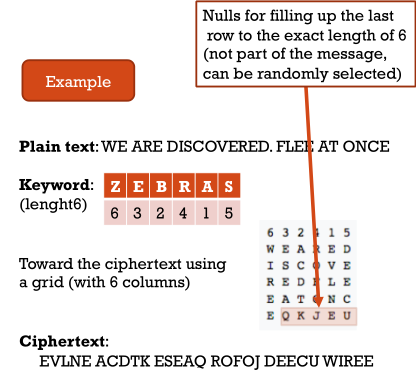

Cryptology
Cryptology is composed by cryptography and cryptanalysis
Cryptography
Cryptography is the science and study of secret writing through ciphers and breaking them. Today it enlarge its meaning including mathematical studies related to aspects of information security, such as:
- confidentiality → encryption algorithms hide the content of messages;
- data integrity → integrity checks functions provide the mains to detect whether a document has been changed;
- entity authentication;
- data origin authentication → message authentication codes or digital signature algorithms provide the mans to verify the source and integrity of message.
Cryptosystem
Cryptosystem is a concept composed by 5 elements:
- E → encryption algorithm
- D → decryption algorithm
- M → set of plain texts
- K → set of keys
- C → set of ciphers texts
It is possibile to se E and D like two functions: $$ E:M\times K \to C $$ $$ D:C\times K \to M $$
A very important principle is Kerckhoffs’ principle:
Do not rely on the secrecy of algorithms; the key should be the only secret that needs protection.
From this principle it is possible to understand that a lot of problems concern key generation, storing, etc. For this reason usually cryptography translate communication security problem into a key management problem.
A cryptosystem can be considered computationally secure if the cipher used in it meets one or both of the following criteria:
- the cost of breaking the cipher exceeds the value of the encrypted information;
- the time required to break the cipher exceeds the useful lifetime of the information.
Key
Key is the most important part of cryptography, security of cryptosystem depends on keeping the key secret. The keyspace is a set of all possible keys and entropy is a measure of the variance in keys
Encryption
Encryption is an algorithm used to make content unreadable by all but the intended receivers. The algorithm is public but keys are secrets: $$ E(key,plaintext) = ciphertext $$ $$ D(key,ciphertext) = plaintext $$
There are two main types of transformations:
- substitution → each element is mapped into another element;
- transposition → elements in the plain text are rearranged.
Substitutions ciphers
A substitution cipher substitutes one symbol for another according to a fixed system

An example could be Caesar cipher in which every character is replaced with the character, e.g., three slots to the right. In this case the key become the number of shift. This type of cipher is called \(ROT_k\) and can be expressed like two simple equations: $$ e(x) = (x + k) (mod\ 26) $$ $$ d(x) = (x - k) (mod\ 26) $$ There are two ways to break this cipher. The first one is a brute force attack, the second one is made by calculating the occurrences of letters and then use the count with the distribution letter of a language in order to find the key faster than using a brute force attack.
Transposition cipher
A transposition cipher scrambles the symbols to produce output. The key become the permutation of symbols

An example of this type of cipher is columnar cipher, the steps are:
- write message in rows with fixed length;
- read column by column selecting columns in some scrambled order;
Both width of rows and columns are usually selected by a keyword.

Modern cryptography
Modern cryptography is based on bit (not letter like classic one). New process depends on algorithm:
- stream encryption;
- block encryption;
- public-key encryption.
Stream and block encryption are based on Symmetric key encryption#, instead public-key encryption is based on Asymmetric key encryption#